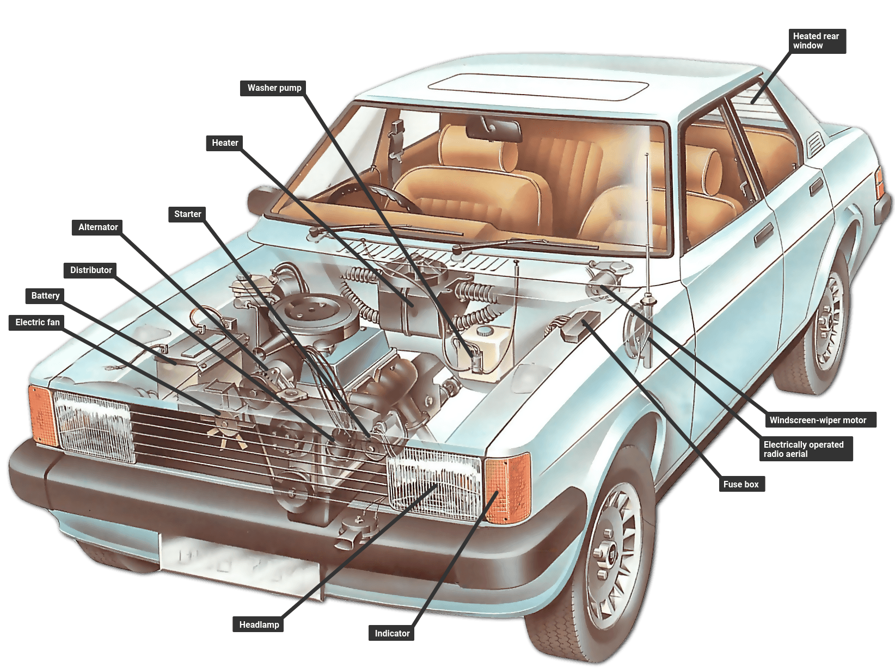
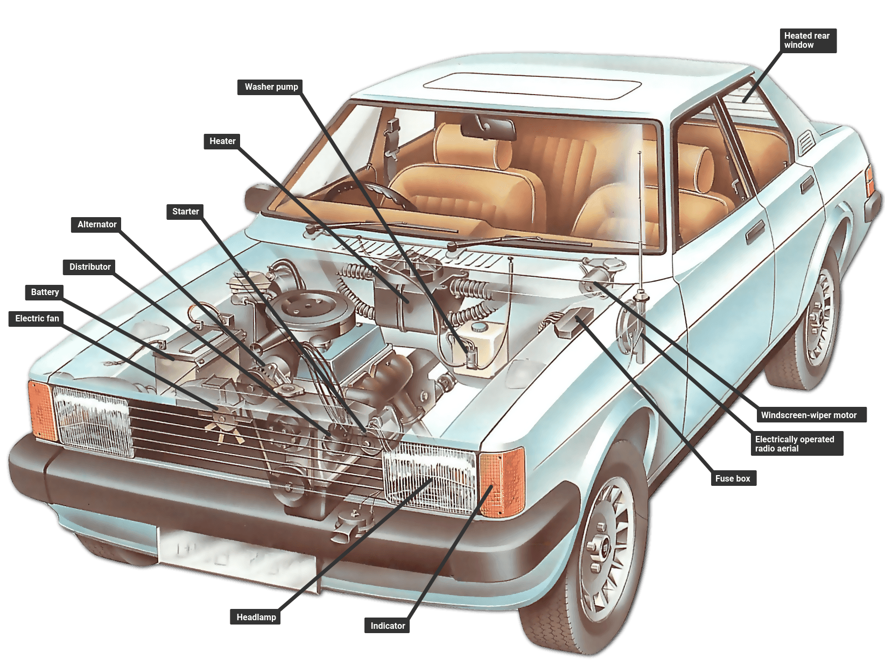
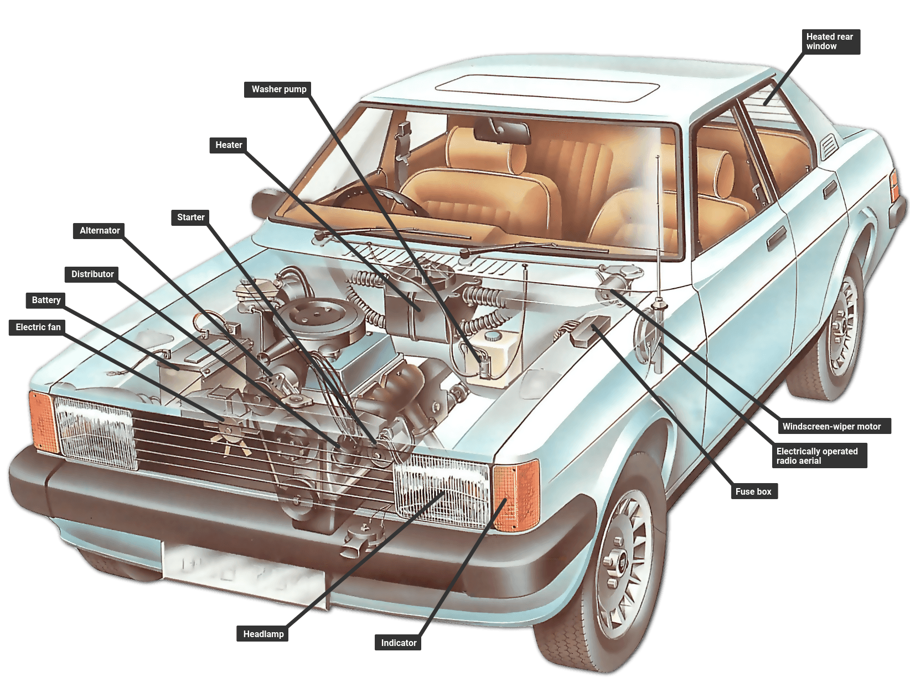

Sistemul Electric
Sistemul de racire
Sistemul electric dintr-un automobil este responsabil pentru furnizarea și distribuția energiei electrice către diverse componente ale mașinii. Acesta este format din bateria, alternator, motor de pornire și o rețea de cabluri, siguranțe și relele. Bateria este sursa primară de energie și este responsabilă pentru furnizarea energiei electrice pentru a porni motorul și pentru a alimenta componentele electrice ale mașinii când motorul este oprit. Alternatorul este responsabil pentru încărcarea bateriei și furnizarea de energie componentelor electrice ale mașinii în timpul funcționării motorului. Acesta convertește energia mecanică a motorului în energie electrică pentru a menține bateria încărcată și pentru a alimenta sistemul electric al mașinii. Motorul de pornire este responsabil pentru pornirea motorului. Acesta extrage energie din baterie și o folosește pentru a roti motorul până când acesta porneste. Motorul de pornire este de obicei amplasat în apropierea volantei motorului sau a plăcii de presiune. Sistemul electric include, de asemenea, o rețea de cabluri, siguranțe și rele care distribuie energie și protejează componentele electrice ale mașinii. Cablurile transmit energie de la baterie la diferitele componente ale mașinii, în timp ce siguranțele și relele protejează componentele electrice împotriva daunelor cauzate de supratensiuni și scurtcircuite. În general, sistemul electric este esențial pentru funcționarea și performanța unei mașini. Întreținerea și îngrijirea adecvată sunt necesare pentru a asigura funcționarea optimă a sistemului electric. Verificările regulate ale bateriei și ale alternatorului, inspecțiile cablurilor și înlocuirea siguranțelor pot ajuta la prevenirea problemelor și la prelungirea duratei de viață a sistemului electric.
Sistemul de răcire este o componentă vitală a mașinii, responsabilă pentru menținerea temperaturii optime a motorului și prevenirea supraîncălzirii acestuia. Acesta este compus dintr-un radiator, un ventilator, o pompă de apă, un termostat și un lichid de răcire. Lichidul de răcire circulă prin motor și ajută la absorbția căldurii generată în timpul funcționării. Apoi, acesta este pompat prin radiator, unde este răcit prin intermediul aerului care circulă prin lamela radiatorului. Ventilatorul împinge aerul rece prin radiator pentru a reduce temperatura lichidului de răcire. După ce lichidul de răcire este răcit, este pompat înapoi în motor pentru a începe procesul de răcire din nou. Termostatul este responsabil pentru reglarea temperaturii lichidului de răcire, deschizând și închizând fluxul de lichid în funcție de temperatura motorului. O pompă de apă acționată de curea este utilizată pentru a asigura circulația continuă a lichidului de răcire în jurul motorului. Este important să mențineți sistemul de răcire în stare bună de funcționare și să îl întrețineți în mod regulat, deoarece supraîncălzirea motorului poate duce la daune severe și costisitoare. Verificarea nivelului lichidului de răcire, înlocuirea lichidului la intervale regulate, verificarea furtunelor și a radiatorului și înlocuirea termostatului la nevoie sunt pași esențiali în menținerea sistemului de răcire în stare bună de funcționare.

 
